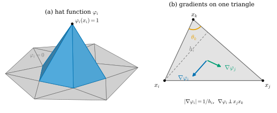
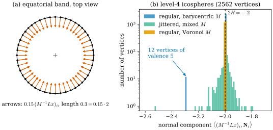
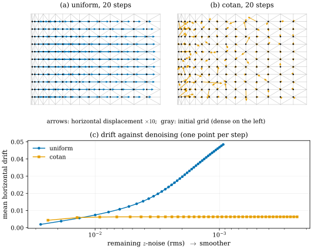

31.3 The Cotangent Laplacian
Goals
- piecewise-linear 함수의 Dirichlet energy를 삼각형 하나에서 계산해 cotan 가중치를 유도하고, cotan Laplacian \(L\)과 mass matrix \(M\)의 부호 규약을 말할 수 있다.
- \(L\)의 성질(symmetric, \(-L\)의 positive semidefiniteness, kernel, linear precision)과 non-Delaunay edge의 음수 가중치가 maximum principle을 깨는 이유를 설명할 수 있다.
- \(M^{-1}Lx \approx 2H\mathbf N\)을 넓이의 gradient로 이해하고 sphere에서 수치로 확인할 수 있다.
- uniform Laplacian과 cotan Laplacian의 smoothing 차이, 그리고 PyTorch3D·Pixel2Mesh의 mesh loss가 각각 어떤 기하량을 줄이고 왜 mesh를 수축시키는지 설명할 수 있다.
Prerequisites
- Section 31.2: bending angle과 mean curvature((31.2.6)), Steiner formula(Proposition 31.2.6), 점마다의 값과 적분한 값(Section 31.2)
- Section 0.4: \(\Delta_S\mathbf x = 2H\mathbf N\) (0.4.3), cotangent formula와 mean curvature flow(In computer vision 상자)
- Section 0.8: Laplacian \(\Delta = \divg\grad\)(부호 규약). Section 0.7: Poisson equation과 discrete exterior calculus(In computer vision 상자)
- linear algebra: symmetric matrix, positive semidefinite, kernel. 미적분: 부분적분(divergence theorem)
Motivation
Section 31.2에서 mean curvature는 크기 \(\abs{H}\)로 edge의 bending angle에서 읽었다. 그런데 smoothing과 mesh 최적화에서 쓰는 것은 방향까지 가진 mean curvature normal \(2H\mathbf N\)이고, Tour는 그것을 cotangent formula로 계산한다고만 말했다((0.4.3)). 이 공식은 어디서 오는가? 그리고 왜 하필 cotangent인가?
답은 “Laplacian은 Dirichlet energy의 gradient”라는 사실이다. smooth surface에서 Dirichlet energy(디리클레 에너지) \(\int\abs{\grad u}^2\,dA\)를 \(u\)에 대해 미분하면 \(-2\Delta u\)가 나온다(부분적분). mesh에서는 \(u\)를 vertex 값으로 정해지는 piecewise-linear 함수로 두고 같은 계산을 하면 된다. 이 절은 그 계산에서 출발해 cotan Laplacian의 성질과 한계를 보고, 3D vision의 mesh 복원 loss가 무엇을 하는지 이 렌즈로 다시 본다.
Piecewise-Linear Functions and Their Energy
mesh 위의 함수를 vertex마다의 값 \(u_1, \dots, u_{n_0}\)으로 정하고 face 안에서는 linear하게 이어 붙인다. vertex \(i\)에서 1, 다른 vertex에서 0인 piecewise-linear 함수를 \(\varphi_i\)라 하면(hat function), 그런 함수는 \(u = \sum_i u_i\varphi_i\)로 쓸 수 있다. 이것이 유한요소법(FEM)의 가장 단순한 basis다.

Lemma 31.3.1 (one triangle). 삼각형 \(T = ijk\)의 넓이를 \(A_T\), 각 vertex의 내각을 \(\theta_i, \theta_j, \theta_k\)라 하면
Derivation. Figure 31.3.1(b)에서 \(\abs{\nabla\varphi_i} = 1/h_i\), \(\abs{\nabla\varphi_j} = 1/h_j\)이고 두 벡터는 변 \(x_jx_k\)와 \(x_ix_k\)에 각각 수직이므로 그 사이의 각은 \(\pi - \theta_k\)이다. 따라서 \(\inner{\nabla\varphi_i}{\nabla\varphi_j} = -\cos\theta_k/(h_ih_j)\)이다. 높이는 \(h_i = \abs{x_i - x_k}\sin\theta_k\), \(h_j = \abs{x_j - x_k}\sin\theta_k\)이고 넓이는 \(A_T = \tfrac12\abs{x_i - x_k}\abs{x_j - x_k}\sin\theta_k\)이므로 \(h_ih_j = 2A_T\sin\theta_k\)이다. 상수를 넓이 \(A_T\)에서 적분하면 \(-A_T\cos\theta_k/(2A_T\sin\theta_k) = -\tfrac12\cot\theta_k\)이다. 둘째 식은 \(\nabla\varphi_i + \nabla\varphi_j + \nabla\varphi_k = 0\)(세 hat function의 합이 상수 1)에서 \(\abs{\nabla\varphi_i}^2 = -\inner{\nabla\varphi_i}{\nabla\varphi_j} - \inner{\nabla\varphi_i}{\nabla\varphi_k}\)이므로 첫 식에서 나온다.
삼각형마다 이 값을 더하면 Dirichlet energy가 edge마다의 합으로 정리된다. interior edge \(ij\)는 삼각형 둘에 속하고, 그 두 삼각형에서 \(ij\)의 맞은편 각이 \(\alpha_{ij}\)와 \(\beta_{ij}\)다.
Proposition 31.3.2 (cotan formula for the Dirichlet energy). piecewise-linear 함수 \(u = \sum_i u_i\varphi_i\)에 대해
이다. boundary edge에서는 맞은편 각이 하나뿐이므로 \(w_{ij} = \tfrac12\cot\alpha_{ij}\)이다 [Pinkall93].
Derivation. 삼각형 \(T\) 위에서 \(\nabla u = \sum_{a \in T} u_a\nabla\varphi_a\)이고 \(\sum_a\nabla\varphi_a = 0\)이므로 \(\nabla u = \sum_a (u_a - u_c)\nabla\varphi_a\) 꼴로 바꿀 수 있다. (31.3.1)을 써서 정리하면 \(\int_T\abs{\nabla u}^2 = \tfrac12\sum_{\text{edges } ab \text{ of } T}\cot\theta_c\,(u_a - u_b)^2\)(\(c\)는 \(ab\)의 맞은편 vertex)이다. 모든 삼각형을 더하면 interior edge는 두 번, boundary edge는 한 번 나온다.
The Cotangent Laplacian and the Mass Matrix
Definition 31.3.3 (cotan Laplacian and mass matrix). (31.3.2)의 \(w_{ij}\)로 \(n_0 \times n_0\) 행렬 \(L\)을
로 정하고 cotan Laplacian이라 한다. vertex \(i\)의 넓이 몫 \(A_i\)(barycentric area: 둘레 삼각형 넓이의 1/3씩, 또는 mixed Voronoi area [Meyer03])를 대각에 놓은 \(M = \diag(A_i)\)를 mass matrix(질량 행렬)라 한다. 함수 \(u\)의 discrete Laplace–Beltrami operator는 \(M^{-1}Lu\), 곧
이다. Tour의 공식(Section 0.4)과 같다.
왜 \(L\)이 Laplacian인가? (31.3.2)는 \(\int\abs{\nabla u}^2 = -u^{\mathsf T}Lu\)라는 뜻이다. smooth surface에서는 부분적분으로 \(\int\abs{\grad u}^2\,dA = -\int u\,\Delta u\,dA\)(boundary가 없을 때)이므로, \(-u^{\mathsf T}Lu\)와 \(-\int u\,\Delta u\,dA \approx -\sum_i u_i\,(\Delta u)_i A_i\)를 맞대면 \(Lu \approx M\Delta u\)가 된다. \(L\)은 “적분한 Laplacian”이고, \(M^{-1}\)이 그것을 점마다의 값으로 바꾼다. Section 31.2의 구분으로 말하면 \(Lu\)는 적분한 양, \(M^{-1}Lu\)는 점마다의 양이다.
Proposition 31.3.4 (properties of the cotan Laplacian).
- (a) \(L\)은 symmetric이고 \(L\mathbf 1 = 0\)이다(\(\mathbf 1\)은 모든 성분이 1인 vector).
- (b) \(-L\)은 positive semidefinite다. 일부 \(w_{ij}\)가 음수여도 그렇다.
- (c) mesh가 연결되어 있으면 \(\ker L\)은 상수 vector들뿐이다.
- (d) (linear precision) mesh가 평면 안에 있으면 linear function \(u(x) = \inner{a}{x} + b\)에 대해 모든 interior vertex에서 \((Lu)_i = 0\)이다.
Derivation. (a)는 정의에서 바로 나온다. (b)는 \(-u^{\mathsf T}Lu = \int\abs{\nabla u}^2\,dA \ge 0\)이기 때문이다. 이 식은 가중치의 부호와 무관한 적분이다. (c) \(-u^{\mathsf T}Lu = 0\)이면 모든 삼각형에서 \(\nabla u = 0\)이므로 \(u\)는 삼각형마다 상수이고, 이웃 삼각형은 edge에서 값을 공유하므로 연결된 mesh 전체에서 상수다. (d) linear function의 piecewise-linear 보간은 그 함수 자신이다. vertex \(i\)의 값을 바꾸는 변화 \(\varphi_i\)에 대한 energy의 미분은 \(-2(Lu)_i = 2\int\inner{\nabla u}{\nabla\varphi_i}\,dA = 2\inner{a}{\int\nabla\varphi_i\,dA}\)이고, interior vertex의 \(\varphi_i\)는 자기 support(\(i\)를 포함하는 삼각형들)의 테두리에서 0이므로 \(\int\nabla\varphi_i\,dA = 0\)(divergence theorem)이다.
(d)는 smoothing에서 결정적이다. 평평한 영역에서 위치 좌표 \(x, y\) 자체가 linear function이므로 \(Lx = 0\)이고, cotan Laplacian은 평평한 곳의 vertex를 전혀 움직이지 않는다. 불규칙한 평면 mesh에서도 그렇다.
Negative Weights and the Maximum Principle
\(w_{ij}\)는 음수가 될 수 있다. 삼각함수 항등식으로
이므로 \(w_{ij} \lt 0 \iff \alpha + \beta \gt \pi\)이다. 평면에서 이것은 edge \(ij\)의 한쪽 맞은편 vertex가 다른 쪽 삼각형의 circumcircle 안에 들어 있다는 것과 같다. 곧 그 edge가 Delaunay 조건을 어긴다.
![세 패널. 윗줄 왼쪽 (a) Delaunay: 마름모 모양의 사각형 x_i, x_l, x_j, x_m을 가로 대각선 x_i x_j(파란 굵은 선)가 나누고, 위 삼각형 x_i x_j x_l의 circumcircle(회색 점선)이 그려져 있다. x_m은 원 밖에 있다. 위아래 vertex의 각 α, β가 주황 호로 표시되어 있고, 아래에 x_m outside the circle, α + β = 165°, w_ij = +0.13. 윗줄 오른쪽 (b) not Delaunay: 납작한 사각형에서 대각선 x_i x_j가 주홍 굵은 선이고, x_m이 circumcircle 안에 있다. 아래에 주홍 글씨로 x_m inside the circle, α + β = 273°, w_ij = −1.07. 아랫줄 (c) discrete harmonic, but above the maximum: 가운데 흰 점 x_0을 일곱 개의 boundary vertex가 둘러싼 부채꼴 mesh. 오른쪽 끝 vertex의 값만 0이고 나머지는 1이다. 가운데에서 오른쪽 끝으로 가는 edge가 주홍 굵은 선이고 화살표로 w = −1.44 < 0이 표시되어 있다. 색은 1을 흰색으로 하는 발산형 색으로, x_0 둘레가 진한 빨강(1보다 큼)이고 boundary 쪽으로 갈수록 흰색이 되며, 오른쪽 끝으로 가는 좁은 두 삼각형만 파랑(1보다 작음)이다. 왼쪽의 화살표가 x_0을 가리키며 u_0 = 1.29 > 1 (above every boundary value)이라고 적혀 있다. 오른쪽에 boundary values: 0 at the right tip, 1 elsewhere라는 글과 색 막대 u (white = 1)가 있다.](figures/fig-31-3-2-non-delaunay.svg)
Figure 31.3.2의 (a)와 (b)를 비교하자. 위아래 vertex가 대각선에 가까워질수록 \(\alpha, \beta\)가 커지고, 합이 \(180^\circ\)를 넘는 순간 아래 vertex가 원 안으로 들어가며 가중치가 음수가 된다. (c)는 그 결과다. discrete harmonic function은 \((Lu)_i = 0\), 곧 \(u_i = \sum_j w_{ij}u_j/\sum_j w_{ij}\)를 만족한다. 가중치가 모두 양수면 \(u_i\)는 이웃 값의 convex combination이라 이웃의 최댓값을 넘을 수 없다. 이것이 discrete maximum principle(이산 최대 원리)이다. 가중치 하나가 음수면 값이 0인 이웃이 오히려 \(u_0\)를 위로 밀어 올려 \(1.29\)가 된다. smooth harmonic function은 boundary가 아닌 점에서 최댓값을 가질 수 없는데, 이산판은 그 성질을 잃는다. 같은 점들로 대각선을 Delaunay 쪽으로 뒤집으면 \(x_0\)의 가중치가 모두 양수가 되고 \(u_0 = 1\)로 돌아온다.
해결책이 있다. Bobenko와 Springborn은 mesh의 edge 길이만으로 정해지는 intrinsic Delaunay triangulation 위에서 cotan Laplacian을 만들면 가중치가 모두 양수이고 surface의 intrinsic geometry에만 의존한다는 것을 보였다 [Bobenko07]. 대가는 locality다. 그 triangulation의 edge는 원래 mesh의 edge와 다를 수 있다. Wardetzky 등은 이런 대가가 피할 수 없음을 보였다. symmetric(SYM), 원래 mesh의 edge에만 가중치(LOC), linear precision(LIN), 양수 가중치(POS)를 일반 mesh에서 동시에 만족하는 discrete Laplacian은 없다 [Wardetzky07]. 그들의 분류에서 cotan Laplacian은 POS를 버린 것이고, uniform(combinatorial) Laplacian은 LIN을 버린 것이며, intrinsic Delaunay Laplacian은 LOC를 버린 것이다.
The Mean Curvature Normal
이제 \(u\) 자리에 위치 좌표 \(x = (x^1, x^2, x^3)\)를 넣는다. smooth surface에서 \(\Delta_S x = 2H\mathbf N\)이었고((0.4.3)), surface를 속도 \(V\)로 움직일 때 넓이의 변화율은 \(-\int\inner{2H\mathbf N}{V}\,dA\)였다. mesh에서는 넓이가 vertex 위치의 함수이므로 그 gradient를 직접 계산할 수 있다.
Proposition 31.3.5 (area gradient). mesh의 넓이 \(\operatorname{Area}(x_1, \dots, x_{n_0})\)에 대해
이다. 곧 \(-(Lx)_i\)는 vertex \(i\)를 움직일 때 넓이가 가장 빨리 늘어나는 방향이다 [Pinkall93].
Derivation. 삼각형 \(f = ijk\)(반시계 방향, unit normal \(\mathbf N_f\))의 넓이를 \(x_i\)에 대해 미분하면, 넓이는 밑변 \(x_jx_k\)와 높이의 곱의 절반이므로 gradient는 밑변에 수직이고 \(x_i\) 쪽을 향하며 크기가 \(\tfrac12\abs{x_k - x_j}\)이다. 곧 \(\tfrac12\mathbf N_f \times (x_k - x_j)\)이다. 이 vector를 \(x_i - x_j\)와 \(x_i - x_k\)의 combination으로 쓰면 \(\tfrac12\big(\cot\theta_k\,(x_i - x_j) + \cot\theta_j\,(x_i - x_k)\big)\)이다(Figure 31.3.1(b)의 삼각형에서 두 식의 성분을 비교하면 된다). \(i\)를 포함하는 삼각형에 대해 더하면 edge \(ij\)마다 맞은편 두 각의 cotangent가 모여 (31.3.6)이 된다. 검증 스크립트는 유한차분과 비교한다.
넓이의 변화율 공식과 맞대면, vertex \(i\)를 \(\delta x_i\)만큼 움직일 때 넓이 변화 \(-\inner{(Lx)_i}{\delta x_i}\)는 \(-\inner{2H\mathbf N}{\delta x_i}A_i\)에 해당한다. 그래서
이다. 좌변은 \(\mathbf N\)의 방향을 고르지 않고 계산되며, 우변도 \(\mathbf N\)을 뒤집으면 \(H\)가 함께 뒤집혀 같은 vector다. 바깥쪽 \(\mathbf N\)의 sphere에서는 \(H = -1/r\)이므로 \(M^{-1}Lx \approx -\tfrac2r\mathbf N\), 곧 중심을 향하는 길이 \(2/r\)인 vector다.

Example 31.3.6 (spheres). Figure 31.3.3(b)의 주황 막대가 정확히 \(-2\)인 데는 이유가 있다. vertex가 모두 반지름 \(r\)인 sphere 위에 있으면 \(\abs{x_i} = \abs{x_j} = r\)이므로 \(\inner{x_j - x_i}{x_i} = -\tfrac12\abs{x_j - x_i}^2\)이고
\[ \begin{aligned} \inner{(Lx)_i}{x_i} &= -\frac12\sum_{j \sim i} w_{ij}\abs{x_j - x_i}^2 \\ &= -2\cdot\frac18\sum_{j \sim i}\big(\cot\alpha_{ij} + \cot\beta_{ij}\big)\abs{x_j - x_i}^2 \end{aligned} \]
이다. 마지막 합은 circumcenter로 나눈 Voronoi area \(A_i^{\mathrm{V}}\)의 공식이다 [Meyer03]. 따라서 \(\inner{(Lx)_i}{x_i/r} = -2A_i^{\mathrm{V}}/r\)이고, mass로 \(A_i^{\mathrm{V}}\)를 쓰면 normal 성분이 정확히 \(-2/r\)이다. regular icosphere에는 둔각삼각형이 없어 mixed area가 \(A_i^{\mathrm{V}}\)와 같다. barycentric area는 valence 5인 vertex에서 \(A_i^{\mathrm{V}}\)와 달라 14%의 오차를 남기고, 이 오차는 level을 올려도 줄지 않는다(level 2, 3, 4에서 \(-2.27, -2.29, -2.29\)).
이 계산은 vertex가 sphere 위에 있기만 하면 삼각형의 모양과 상관없이 성립한다. 그래서 vertex를 흔든 mesh에서 초록 막대가 퍼지는 것은 점마다의 값이 시끄러워서가 아니라 mass의 선택 때문이다. mixed area는 둔각삼각형에서 Voronoi area 대신 넓이의 1/2, 1/4을 쓰고(그래야 넓이 몫이 음수가 되지 않는다), 그림의 jittered mesh에서 \(-2\)를 벗어난 vertex는 정확히 둔각삼각형 178개에 붙은 439개다. circumcenter로 나눈 Voronoi area를 그대로 쓰면 이 mesh에서도 모든 vertex에서 \(-2\)가 나온다. 점마다의 값이 흔들리는 것은 tangential 성분이다(최대 0.05, regular mesh에서는 0.008).
Verification: verify/v-31-3-cotangent-laplacian.py
Uniform versus Cotangent Smoothing
그래픽스에서 가장 먼저 쓰인 mesh Laplacian은 기하를 보지 않는 uniform(umbrella) Laplacian이다. \((L_ux)_i = \tfrac{1}{d_i}\sum_{j \sim i}x_j - x_i\), 곧 이웃의 무게중심에서 \(x_i\)를 뺀 vector다(\(d_i\)는 valence). PyTorch3D의 laplacian이 이 행렬(대각 \(-1\), 이웃 \(1/d_i\))이다 [Ravi20]. 두 Laplacian으로 smoothing을 해 보자. vertex를 cotan Laplacian 방향으로 조금씩 옮기는 것은 position의 heat equation \(\partial_t x = \Delta x = 2H\mathbf N\), 곧 mean curvature flow의 이산판이다(Tour의 Section 0.4). uniform Laplacian으로 같은 일을 하면 기하를 보지 않는 “이웃 평균”이 된다. 안정하도록 implicit step \((M - \tau L)x^{\text{new}} = Mx\)로 푼다 [Desbrun99].

Figure 31.3.4의 (a)부터 보자. uniform Laplacian은 \(x_i\)를 이웃의 무게중심으로 끈다. 평평한 곳이라도 이웃의 간격이 고르지 않으면 무게중심은 \(x_i\)와 다르므로 vertex가 평면을 따라 움직인다. 이것은 surface의 모양은 바꾸지 않고 parametrization만 바꾸는 tangential drift이고, texture 좌표나 대응이 vertex에 붙어 있으면 그것이 미끄러진다. (b)의 cotan은 평평한 곳에서 \(Lx = 0\)이라 처음 잡음이 만든 기울기를 펴는 만큼만 움직인다. (c)가 그 차이를 정량으로 보인다. 같은 만큼 잡음을 줄였을 때, uniform의 이동은 계속 쌓이고 cotan의 이동은 멈춘다. 두 smoothing 모두 닫힌 surface는 수축시킨다는 점은 같다. mean curvature flow에서 sphere는 \(r(t)^2 = r_0^2 - 4t\)로 줄어들었다(Exercise 0.4.4).
Mesh Losses Through This Lens
vertex 위치를 학습하는 mesh 복원(Pixel2Mesh [Wang18], PyTorch3D 기반의 mesh fitting [Ravi20])은 data term에 정규화 항을 더한다. PyTorch3D 공식 코드의 세 정규화 항은 다음과 같다(pytorch3d/loss/ 의 해당 파일).
- Laplacian smoothing(
mesh_laplacian_smoothing): vertex마다 \(\abs{(L_\ast x)_i}\)(제곱하지 않은 길이)를 구해 vertex 수로 평균한다. 기본값"uniform"은 \(L_\ast = L_u\)(이웃 무게중심까지의 vector),"cot"은 cotan 가중치를 행의 합으로 정규화한 가중 무게중심까지의 vector,"cotcurv"는 \(\abs{\sum_j(\cot a_{ij} + \cot b_{ij})(x_j - x_i)}/(4\cdot\text{둘레 넓이})\)다. 세 경우 모두 Laplacian 행렬과 넓이는torch.no_grad()안에서 계산되어 상수로 취급된다. - normal consistency(
mesh_normal_consistency): edge를 공유하는 face 쌍마다 \(1 - \cos(n_0, n_1)\)을 구해 평균한다. normal은 공유 edge와 두 맞은편 vertex로 만들므로 face에 저장된 vertex 순서(winding)에 의존하지 않고, edge를 공유하는 face가 셋 이상이면 모든 쌍을 쓴다. - edge length(
mesh_edge_loss): edge마다 \((\abs{x_i - x_j} - \ell_0)^2\)을 평균한다. 목표 길이 \(\ell_0\)의 기본값은 0이다.
Pixel2Mesh의 정규화는 이름은 비슷하지만 정의가 다르다 [Wang18]. Laplacian 항은 uniform Laplacian coordinate \(\delta_p = p - \tfrac{1}{\abs{N(p)}}\sum_{k \in N(p)}k\)가 deformation block 하나를 지나기 전과 후에 얼마나 변했는지 \(\sum_p\abs{\delta'_p - \delta_p}^2\)으로 재고, edge 항은 \(\sum_p\sum_{k \in N(p)}\abs{p - k}^2\)이며, normal 항은 predicted vertex에서 이웃으로 가는 edge가 가장 가까운 ground truth 점의 normal에 수직이 되도록 \(\sum\inner{p - k}{n_q}^2\)을 쓴다. 논문은 첫 block에서는 입력이 smooth ellipsoid라서 Laplacian 항이 smoothness 항처럼 작용하고, 그다음 block부터는 지나친 변형을 막는다고 설명한다.
이 항들이 줄이는 기하량은 앞의 계산으로 읽힌다.
- edge 길이의 제곱 평균 \(\tfrac{1}{n_1}\sum_{ij}\abs{x_i - x_j}^2\)의 gradient는 \(-\tfrac{2}{n_1}L_{\text{graph}}x\)(\(L_{\text{graph}}\)는 가중치가 모두 1인 graph Laplacian)이다(Exercise 31.3.4). 이것을 줄이는 것은 uniform smoothing과 같은 방향으로 vertex를 끌고, 모든 edge가 짧아지는 쪽, 곧 mesh 전체가 한 점으로 줄어드는 쪽이 최소다.
- uniform Laplacian loss는 umbrella vector의 길이를 줄인다. 닫힌 surface에서 \(L_ux = 0\)인 해는 모든 vertex가 한 점에 모인 것뿐이다(Proposition 31.3.4(c)와 같은 논리를 graph에 쓴다). 평평한 곳에서도 간격이 고르지 않으면 0이 아니므로 tangential drift를 만든다.
"cotcurv"는 둘레 넓이가 barycentric area의 3배이므로 vertex마다 정확히 \(\abs{(M^{-1}Lx)_i}/6 = \abs{H_i}/3\)이다(\(H_i\)는 barycentric \(M\)으로 잰 값). unit icosphere(level 4)에서 평균 0.333이다.- normal consistency는 bending angle의 함수다. \(1 - \cos\theta_e \approx \theta_e^2/2\)이므로 edge마다 \(\theta_e^2\)를 벌하는데, (31.2.6)과 달리 edge 길이 \(\ell_e\)로 가중하지 않는다. 그래서 긴 edge와 짧은 edge의 꺾임을 똑같이 벌한다.
![두 패널. (a) 가로축 roughness / start(왼쪽 1.0에서 오른쪽 0.25로 감소), 세로축 size / start(0.93에서 1.01)인 그래프. 왼쪽 위 검은 점 start에서 세 곡선이 출발하고, 곡선마다 이름과 동차 차수 k가 직접 적혀 있다. 주황(normal consistency, k = 0)은 높이 1에서 수평으로 오른쪽 끝까지 간다. 초록(edge length, target 0, k = 2)은 오른쪽으로 가며 점점 내려가 0.965에서 끝난다. 파랑(Laplacian, uniform, k = 1)은 거칠기 0.56까지 거의 수평으로 가다가 거기서 꺾여 조금 왼쪽으로 되돌아가며 아래로 내려가 0.936에서 끝난다. (b) 세 개의 구 mesh가 나란히 있고 각각 반지름 1인 점선 원 안에 있다. 파란 구(size 0.936)는 원보다 작고 표면이 울퉁불퉁하다. 초록 구(size 0.965)는 매끈하고 원보다 조금 작다. 주황 구(size 1.000)는 매끈하고 원을 꽉 채운다.](figures/fig-31-3-5-losses.svg)
Figure 31.3.5의 (a)에서 세 곡선의 모양을 비교하자. 주황 곡선은 수평이다. 매끄러워지는 동안 크기가 전혀 변하지 않는다. 초록 곡선은 매끄러워지는 만큼 아래로 내려간다. 파란 곡선은 처음에는 수평에 가깝게 잡음을 줄이지만, 거칠기 0.56 근처에서 멈추고 그다음부터는 조금 왼쪽으로 되돌아가며(더 거칠어지며) 아래로 내려간다. sphere의 umbrella vector는 잡음이 없어도 curvature 때문에 0이 아니고, 그 길이를 줄이는 가장 쉬운 방법이 전체를 줄이는 것이기 때문이다. (b)는 끝 상태다. 파란 sphere는 원보다 작고 여전히 울퉁불퉁하다.
Summary
- piecewise-linear 함수의 Dirichlet energy는 \(\sum_{ij}w_{ij}(u_i - u_j)^2\), \(w_{ij} = \tfrac12(\cot\alpha_{ij} + \cot\beta_{ij})\)이다. 이것으로 만든 cotan Laplacian \(L\)과 mass matrix \(M\)에서 \(M^{-1}L \approx \Delta\)이다. 부호와 상수는 문헌마다 다르다.
- \(L\)은 symmetric이고 \(-L\)은 언제나 positive semidefinite이며, 연결된 mesh에서 kernel은 상수, 평면에서는 linear precision을 가진다. 그러나 \(\alpha + \beta \gt \pi\)인 non-Delaunay edge에서 가중치가 음수가 되어 maximum principle이 깨진다. 모든 좋은 성질을 동시에 가진 discrete Laplacian은 일반 mesh에 없다.
- \(-(Lx)_i\)는 넓이의 gradient이고 \(M^{-1}Lx \approx 2H\mathbf N\)이다. vertex가 모두 sphere 위에 있는 mesh에서는 circumcenter로 나눈 Voronoi area로 normal 성분이 정확히 \(-2/r\)이다.
- uniform Laplacian은 vertex를 surface를 따라 미끄러뜨리고, cotan은 평평한 곳의 vertex를 움직이지 않는다.
- PyTorch3D의 Laplacian·edge loss는 scale에 대해 동차이므로 mesh를 수축시키고, normal consistency는 scale 불변이라 수축시키지 않는 대신 모든 꺾임을 벌한다.
다음 절에서는 \(L\)과 \(M\)의 generalized eigenproblem을 푼다. 그 eigenfunction은 mesh 위의 Fourier basis이고, sphere에서는 Section 29.6의 spherical harmonics가 된다. heat kernel, heat method, shape descriptor, functional map이 모두 이 spectrum 위에 선다.
Quick check
Exercise 31.3.1 ★ 한 변이 \(h\)인 정삼각형으로 평면을 덮은 mesh에서 \(w_{ij}\)를 구하고, \(u = x^2\)에 대해 interior vertex에서 \((M^{-1}Lu)_i\)(barycentric \(M\))를 계산하여라. \(\Delta(x^2) = 2\)와 비교하여라.
Solution
모든 각이 \(60^\circ\)이므로 \(w_{ij} = \tfrac12(\cot 60^\circ + \cot 60^\circ) = 1/\sqrt3\)이다. vertex \(x_i\)의 이웃 여섯은 \(x_i + h(\cos\theta, \sin\theta)\), \(\theta = 0, 60^\circ, \dots, 300^\circ\)이므로 \(\sum_j(u_j - u_i) = \sum_\theta (2x_ih\cos\theta + h^2\cos^2\theta) = 3h^2\)이고 \((Lu)_i = 3h^2/\sqrt3 = \sqrt3h^2\)이다. barycentric area는 삼각형 6개 × \((\sqrt3/4)h^2\) × 1/3 \(= (\sqrt3/2)h^2\)이므로 \((M^{-1}Lu)_i = 2\)로 정확히 맞는다. 이 mesh에서는 모든 가중치가 같아 cotan Laplacian이 uniform Laplacian의 상수배다.
Verification: verify/v-31-3-cotangent-laplacian.py
Exercise 31.3.2 ★ edge \(ij\)의 맞은편 각이 \(\alpha = \beta = 100^\circ\)이다. \(w_{ij}\)는? 이 edge를 뒤집으면(사각형의 다른 대각선으로 바꾸면) 새 edge의 맞은편 각의 합은 얼마가 되는가?
Solution
\(w_{ij} = \cot 100^\circ \approx -0.176 \lt 0\)이다(\(\alpha + \beta = 200^\circ \gt 180^\circ\)). convex quadrilateral의 네 내각의 합은 \(360^\circ\)이고, 원래 대각선의 맞은편 각이 \(\alpha\)와 \(\beta\)였으므로 새 대각선의 맞은편 각(원래 \(x_i, x_j\)의 각)의 합은 \(360^\circ - 200^\circ = 160^\circ \lt 180^\circ\)이다. 뒤집은 edge는 가중치가 양수다. 이렇게 음수 가중치 edge를 뒤집어 가는 것이 Delaunay flip이다.
Verification: verify/v-31-3-cotangent-laplacian.py
Exercise 31.3.3 ★ 참인지 거짓인지 판별하여라. “non-Delaunay edge가 있어 cotan 가중치가 음수이면 \(-L\)은 positive semidefinite가 아니고, implicit smoothing \((M - \tau L)x^{\text{new}} = Mx\)가 풀리지 않을 수 있다.”
Solution
거짓이다. \(-u^{\mathsf T}Lu = \int\abs{\nabla u}^2\,dA \ge 0\)은 가중치의 부호와 무관하게 성립하므로 \(-L\)은 언제나 positive semidefinite이고, \(M\)은 양수 대각이므로 \(\tau \gt 0\)에서 \(M - \tau L\)은 positive definite다. 연립방정식은 언제나 유일한 해를 가진다. 음수 가중치가 깨는 것은 maximum principle(Figure 31.3.2(c))이다.
Verification: verify/v-31-3-cotangent-laplacian.py
Exercise 31.3.4 ★★ \(\mathcal L_e(x) = \tfrac{1}{n_1}\sum_{ij}\abs{x_i - x_j}^2\)(PyTorch3D의 edge loss, 목표 길이 0)의 gradient가 \(-\tfrac{2}{n_1}L_{\text{graph}}x\)임을 보이고(\(L_{\text{graph}}\)은 edge마다 1, 대각은 \(-d_i\)), gradient flow에서 \(\tfrac{d}{dt}\sum_i\abs{x_i - c}^2 = -4\mathcal L_e\)임을 확인하여라.
Solution
\(\partial\abs{x_i - x_j}^2/\partial x_i = 2(x_i - x_j)\)이므로 \(\partial\mathcal L_e/\partial x_i = \tfrac{2}{n_1}\sum_{j \sim i}(x_i - x_j) = -\tfrac{2}{n_1}\big(\sum_{j \sim i}x_j - d_ix_i\big) = -\tfrac{2}{n_1}(L_{\text{graph}}x)_i\)이다. 이것은 uniform smoothing의 방향(이웃 쪽)이다. translation에 불변이므로 \(\sum_i\nabla_i\mathcal L_e = 0\)이고, \(\mathcal L_e\)는 2차 동차이므로 \(\sum_i\inner{\nabla_i\mathcal L_e}{x_i - c} = 2\mathcal L_e\)이다(직접: \(\tfrac{2}{n_1}\sum_{ij}\inner{x_i - x_j}{(x_i - c) - (x_j - c)} = 2\mathcal L_e\)). 따라서 \(\tfrac{d}{dt}\sum_i\abs{x_i - c}^2 = 2\sum_i\inner{\dot x_i}{x_i - c} = -4\mathcal L_e \lt 0\)이다.
Verification: verify/v-31-3-cotangent-laplacian.py
Exercise 31.3.5 ★★
PyTorch3D의 "cotcurv" 항 \(\abs{\sum_j(\cot a_{ij} + \cot b_{ij})(x_j - x_i)}/(4\bar A_i)\)(\(\bar A_i\)는 vertex \(i\)를 포함하는 삼각형 넓이의 합)이 \(\abs{H_i}/3\)임을 보여라. 여기서 \(H_i\)는 barycentric mass로 잰 mean curvature다. 반지름 \(r\)인 sphere mesh에서 이 loss의 값은 대략 얼마이고, 이것만으로 mesh를 최적화하면 크기는 어떻게 되는가?
Solution
분자는 \(2\abs{(Lx)_i}\)이고 \(\bar A_i = 3A_i\)(barycentric)이므로 항은 \(2\abs{(Lx)_i}/(12A_i) = \abs{(M^{-1}Lx)_i}/6 \approx \abs{2H_i}/6 = \abs{H_i}/3\)이다. sphere에서는 약 \(1/(3r)\)이다(unit icosphere level 4에서 0.333). 이 값 자체는 \(r\)이 클수록 작으므로, 행렬과 넓이까지 미분한다면 mesh를 키우는 쪽이 이긴다. 그러나 PyTorch3D는 \(L\)과 넓이를 torch.no_grad() 안에서 계산해 상수로 두므로, 실제 gradient는 고정된 가중치의 Laplacian smoothing과 같은 방향(1차 동차)이 되어 mesh를 줄인다. 같은 식이라도 무엇을 미분하는지가 동작을 바꾼다.
Verification: verify/v-31-3-cotangent-laplacian.py